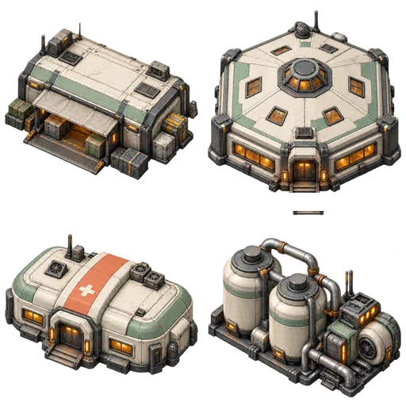
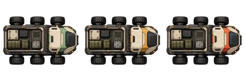
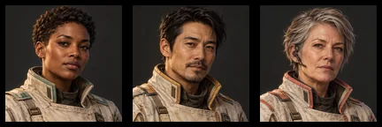
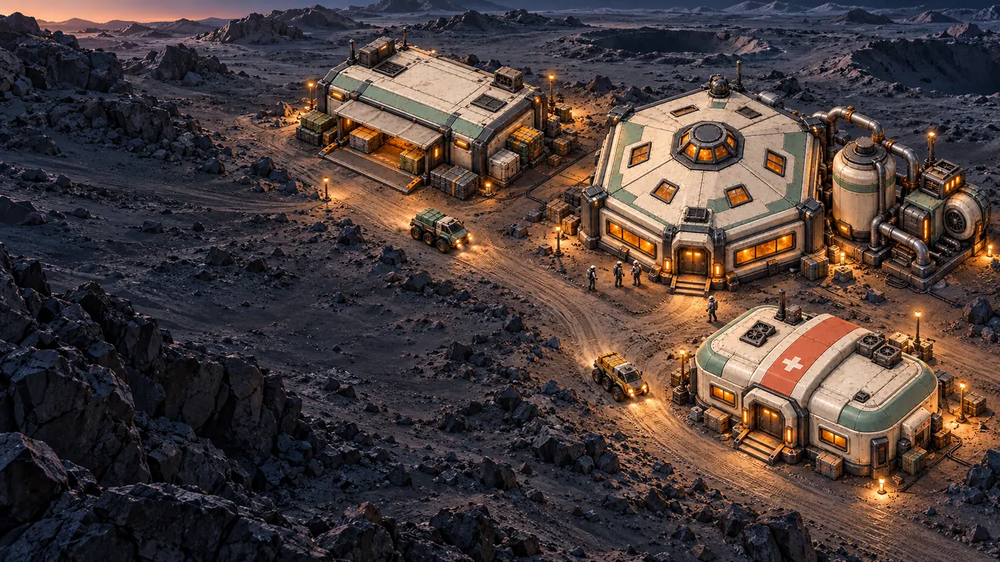

CURRENT ASSET LIBRARY / GROUND V2
A colony worth driving through.
Original illustrated buildings, portraits and matching cargo rovers. Full resolution masters, generation prompts and optimized texture-atlas coordinates are saved alongside this library. Earlier orbital artwork is archived.
Four structures. Three destinations.
Depot, habitat, clinic and an oxygen plant annex attached to the habitat. The plant does not add a travel destination.

One rover. Three distinct colors.

Meet the merchants.
Mara Vale and Ilan Rook are the player portrait options. Tess Calder is the named rule-based NPC. Human display names can be customized.

The surface colony.

Runtime art uses atlases, reused assets and code animation. No walking animation sheets or 3D engine are required.
Earlier orbital v1 archive